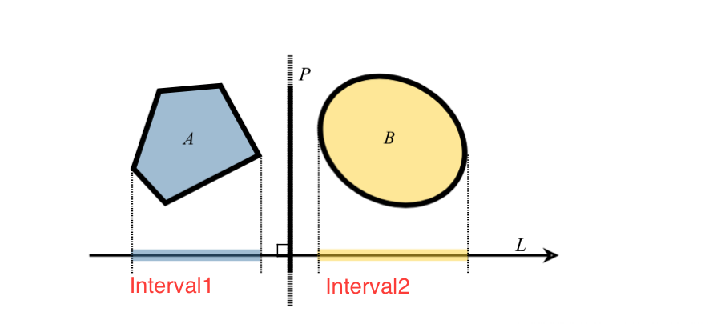

Generic SAT Test
I originally wanted to leave this section until the end of the book, but triangle-triangle uses the most generic form of an SAT test, so this is a good place. There is no code to do on this page, it's purley a concept page!
Triangle AABB used an optimized version of the SAT, that was optimized for those primitives. But, there is a way to generalize the SAT test so that it will work with ANY primitive! See This presentation for details.
By now you should know what the SAT test does, so i'm going to skip the details of how a SAT test works.
Getting the interval
Projecting any arbitrary shape onto a plane results in a line segment on that plane. This line segment is what we call the interval.

class Interval {
float min;
float max;
}
We don't actually need to store an X / Y coordinate for the edges of the intervals. Because both intervals are on the same line, we just have to store the time t at which the interval starts and stops on the line.
It's possible to get the interval of any mesh (or primitive shape) if you know it's vertices. Getting an interval involves projecting each vector onto the given axis and storing the minimum and maximum values. The following code will do that.
Interval GetInterval(BasicShape shape, Axis axis) {
// This assumes that the axis is normalized!
Interval result = new Interval();
result.min = Dot(axis, shape.GetVertex(0));
result.max = result.min;
for (int i = 1; i < shape.VertexCount(); ++i) {
float value = Dot(axis, shape.GetVertex(i));
result.min = Min(result.min, value);
result.max = Max(result.max, value);
}
return result;
}
Comparing Intervals
Two objects intersect if there is no seperating axis between them. We have to test each axis. To test an axis you get the interval of the object on both axis, and check for overlap.
Once you have a way to get the interval of an object, you can perform an axis test like so:
bool TestAxis(BasicShape shape1, BasicShape shape2, Vector3 axis) {
// This assumes that axis s normalized!
Interval i1 = GetInterval(shape1, axis);
Interval i2 = GetInterval(shape2, axis);
if (i1.max < i2.min || i2.max < i1.min) {
// The intervals overlap on the given axis
return true;
}
return false; // No collision found!
}
Test Axis
We now know how to get the interval of any arbitrary shape. But how do we know what axis to test? This comes from a math theory known as the Minkowski difference.
The theory states that to test intersection we need to test the face directions of object a, the face directions of object b and all of the edge directions of the two objects relative to each other.
We've done this with the AABB-Triangle test, where we used the 3 normals of the AABB, the 1 normal of the triangle and the cross products of all 3 faces of the triangle against the 3 faces of the aabb (9), for a total of 13 seperating axis.
It's worth noting, the AABB test is specialized by moving the triangle so that the AABB is at relative origin. Normal SAT tests don't do that. If we followed the generic outline given here, it would test 6 faces of the cube, bringing the total axis up to 25!
In any case, the following table should give some indication as to the complexity of the SAT test for various primitives
| Object A | Object B | Face Dirs (A) | Face Dirs (B) | Edge Dirs (A x B) | Total |
|---|---|---|---|---|---|
| Segment | Triangle | 0 | 0 | 1x3 | 4 |
| Segment | OBB | 0 | 3 | 1x3 | 6 |
| AABB | AABB | 3 | 0(3) | 0(3x0) | 3 |
| OBB | OBB | 3 | 3 | 3x3 | 15 |
| Triangle | Triangle | 1 | 1 | 3x3 | 11 |
| Triangle | Obb | 1 | 3 | 3x3 | 13 |
This test assumes that each object knows enough about its-self to know it's own face directions and edge directions. Lets see a basic example of thos. Given a basic triangle with points p0, p1 and p2 you first want to find the edges of the triangle:
Vector3 edge1 = p1 - p0; // B - A
Vector3 edge2 = p2 - p1; // C - B
Vector3 edge3 = p0 - p2; // A - C
These are the edges you will cross with the edges of the other primitive to get the bulk of the axis to test. Once you know the edges of a triangle, it's easy to find its face.
Vector3 faceNormal = Cross(edge1, edge2);
It's the responsibility of the object to know that information about its-self. An AABB for example will need to know that it has 3 face normals and 3 edges.
So, assuming that we know the edges and normals of an object, the most generic SAT algorithm that compares them all is:
bool ObjectsIntersect(BasicShape shape1, BasicShape shape2) {
return !HasSeperatingAxis(shape1, shape2);
}
// This function returns true if A seperating axis is found
// NOT if the objects overlap
bool HasSeperatingAxis(BasicShape shape1, BasicShape shape2) {
// First, test the face normals of object 1 as the seperating axis
for (int i = 0; i < shape1.FaceNormalCount(); ++i) {
Vector3 testAxis = shape1.GetFaceNormal(i);
if (TestAxis(shape1, shape2, testAxis)) {
// Seperating axis found, early out
return true;
}
}
// Then, test the face normals of object 2 as the seperating axis
for (int i = 0; i < shape2.FaceNormalCount(); ++i) {
Vector3 testAxis = shape2.GetFaceNormal(i);
if (TestAxis(shape1, shape2, testAxis)) {
// Seperating axis found, early out
return true;
}
}
// Finally, check the normals obtained by getting the cross product of each shapes edges.
for (int i = 0; i < shape1.EdgeCount(); ++i) {
for (int j = 0; j < shape2.EdgeCount(); ++j) {
Vector3 testAxis = Cross(shape1.GetEdge(i), shape2.GetEdge(j));
if (TestAxis(shape1, shape2, testAxis)) {
// Seperating axis found, early out
return true;
}
}
}
// No seperating axis found, the objects do not intersect
return false;
}
Fin
That's it. The above test can be used to test the intersection between ANY primitives. This of course assumes that all primitives have a base class called BasicShape which has the following virtual functions that each class overrides
class BasicShape {
virtual int VertexCount()
virtual Vector3 GetVertex(int i)
virtual int FaceNormalCount()
virtual Vector3 GetFaceNormal(int i)
virtual int EdgeCount()
virtual Vector3 GetEdge()
}
Of course, this is not how we implemented our collision system. The specific tests we do are much faster than the generic form SAT. But, we will implement the generic form SAT for triangle-triangle collision next, so i wanted to make sure you understood how it is implemented.